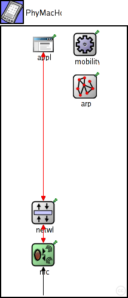
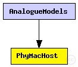
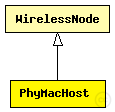

This documentation is released under the Creative Commons license
This documentation is released under the Creative Commons license(no description)
The following diagram shows usage relationships between types. Unresolved types are missing from the diagram. Click here to see the full picture.
The following diagram shows inheritance relationships for this type. Unresolved types are missing from the diagram. Click here to see the full picture.
| Name | Type | Description |
|---|---|---|
| WirelessNode | compound module |
Standard host module for a wireless MiXiM host with configurable NIC, and OSI layers, and mobility module. |
| Name | Type | Description |
|---|---|---|
| AnalogueModels | network |
This example shows how to use AnalogueModels. |
| Name | Type | Default value | Description |
|---|---|---|---|
| networkType | string | "BaseNetwLayer" |
type of the network layer |
| mobilityType | string | "ConstSpeedMobility" |
type of the mobility module |
| arpType | string | "BaseArp" |
type of address resolution module |
| nicType | string | "org.mixim.examples.analogueModels.PhyMacNic" | |
| applicationType | string | "BurstApplLayer" |
type of the application layer |
| numHosts | int |
total number of hosts in the network |
| Name | Value | Description |
|---|---|---|
| display | bgb=,,white,,;bgp=10,10 |
| Name | Direction | Size | Description |
|---|---|---|---|
| radioIn | input |
gate for sendDirect |
| Name | Type | Default value | Description |
|---|---|---|---|
| mobility.initialX | double |
initial x coordinate of the nodes' position (1m/0 = random) |
|
| mobility.initialY | double |
initial y coordinate of the nodes' position (1m/0 = random) |
|
| mobility.initialZ | double |
initial z coordinate of the nodes' position (1m/0 = random) |
|
| netwl.stats | bool |
stats switch |
|
| netwl.headerLength | int |
length of the network packet header (in bits) |
|
| appl.headerLength | int |
length of the application message header (in bits) |
module PhyMacHost extends WirelessNode { parameters: @display("bgb=,,white,,;bgp=10,10"); nicType = "org.mixim.examples.analogueModels.PhyMacNic"; int numHosts; // total number of hosts in the network }
This documentation is released under the Creative Commons license